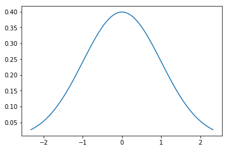
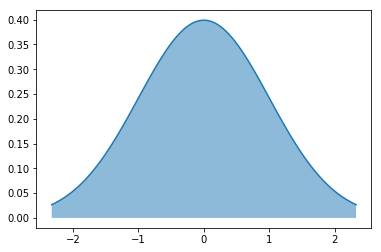

Plotting a Normal Curve
Plotting a Normal Curve
from scipy.stats import norm
import matplotlib.pyplot as plt
import numpy as np
import seaborn as sns
%matplotlib inline
A full normal curve cannot be plotted because it ranges from -inf to inf. We’ll plot a curve which covers 98% of the density. A normal(univariate) curve is defined by two parameters, mean and sigma. We find ppf(0.01) and ppf(0.99) then generate equallt spaced points between those.
The percent point function (ppf) is the inverse of the cumulative distribution function. For this reason, the percent point function is also commonly referred to as the inverse distribution function. That is, for a distribution function we calculate the probability that the variable is less than or equal to x for a given x. For the percent point function, we start with the probability and compute the corresponding x for the cumulative distribution
mu=0
sigma=1
x=np.linspace(norm.ppf(0.01,mu,sigma),norm.ppf(0.99,mu,sigma),100)
sns.lineplot(x, norm.pdf(x,mu,sigma))

We could shade the curve as below
sns.lineplot(x, norm.pdf(x,mu,sigma))
plt.fill_between(x, norm.pdf(x,mu,sigma),alpha=.5);

norm.ppf(0.00,mu,sigma)
-inf